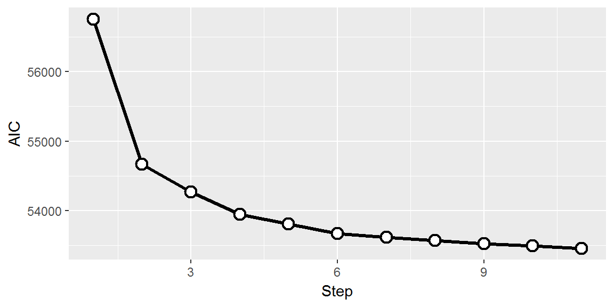
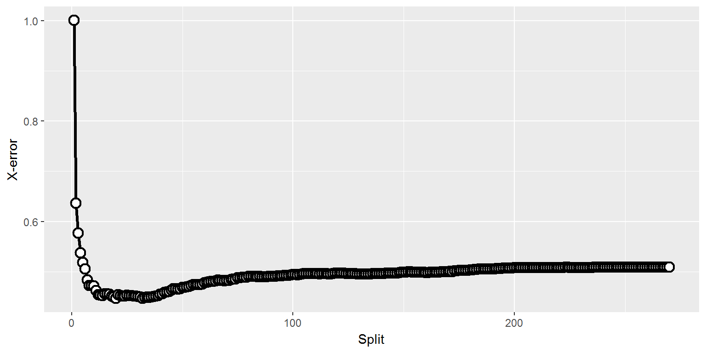
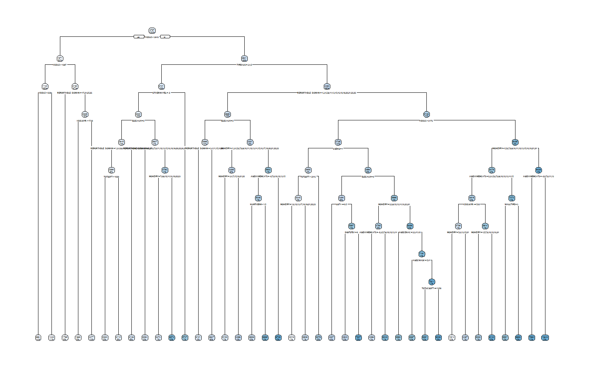

KWHSPH, electricity consumption for space heatingRError in model.frame.default(Terms, newdata,
na.action = na.action, xlev = object$xlevels) :
factor STGRILA has new levels 21Error in `contrasts<-`(`*tmp*`, value = contr.funs[1 + isOF[nn]]) :
contrasts can be applied only to factors with 2 or more levelsfull <- lm(KWHSPH ~ ., data=recs.train)...
Residual standard error: 1019 on 2789 degrees of freedom
Multiple R-squared: 0.7699, Adjusted R-squared: 0.6884
F-statistic: 9.438 on 989 and 2789 DF, p-value: < 2.2e-16null <- lm(KWHSPH ~ 1, data=recs.train)
full <- lm(KWHSPH ~ ., data=recs.train)
sm <- step(null, scope=list(lower=null,upper=full),steps=10,direction="forward")## KWHSPH ~ REPORTABLE_DOMAIN + HDD65 + TYPEHUQ + ELECAUX + PELCOOK +
## GARGLOC + HELPFRI + HELPWS + PCSLEEP2 + CENACHPHDD65: Heating degree days, i.e. need for heating (climate)REPORTABLE_DOMAIN: Region/state where household isTYPEHUQ: Apartment/house/etc.PCSLEEP2: Whether second most used computer is put to sleep when not used (does not select PCSLEEP1)
tm <- rpart(KWHSPH ~ ., data=recs.train, cp=0.00001,xval=10)
cps <- data.frame(tm$cptable)
mincp <- tm$cptable[which.min(tm$cptable[,"xerror"]),"CP"]
ptm <- prune(tm,cp=mincp)
rpart.plot::rpart.plot(ptm)
## HDD65
## HDD30YR
## REPORTABLE_DOMAIN
## CDD65
## Climate_Region_Pub
## CDD30YR
## MONEYPY
## TYPEHUQ
## STORIES
## NAPTFLRS
## PRKGPLC1
## STUDIO
## WELLPUMP
## DIVISION
## AGEHHMEMCAT2
## ...HDD65 – current year, HDD30YR – 30-year average, CDD – same but for cooling)